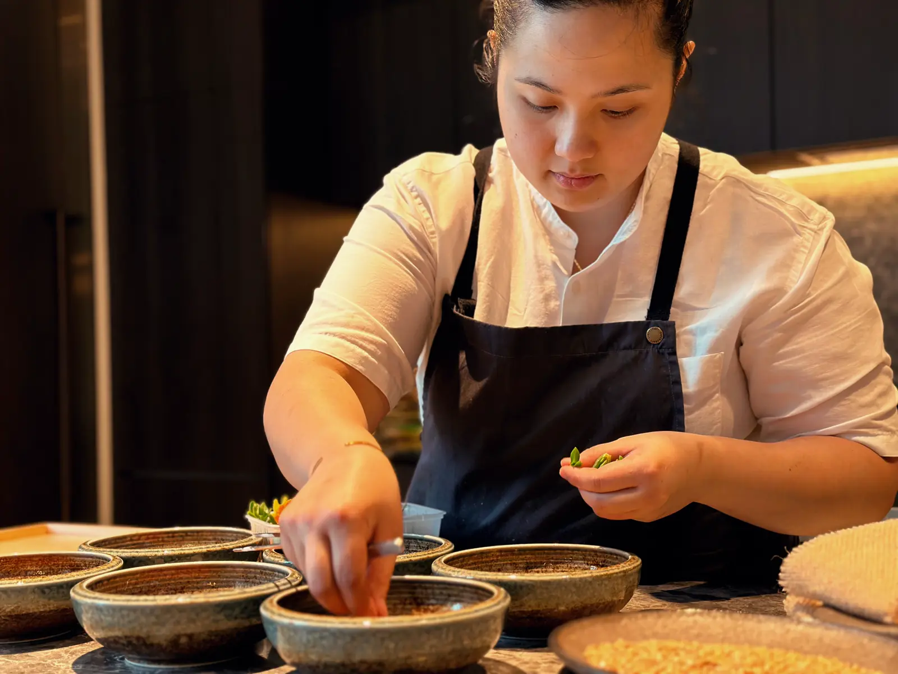

Seated dinners
Private Dining
A chef-led plated expression of Cubo’s culinary philosophy.
Each menu is built around the season, your occasion and Cubo’s cross-cultural approach to Australian produce and Asian heritage.
Cubo Introduction
A first taste of Cubo’s cooking, led by the season.
Cubo Seasonal Expedition
Built around what is at its best this season.
Cubo Culinary Journey
A deeper look into Cubo’s kitchen, led by technique and layered flavour.
Private dining is available for intimate groups and larger gatherings, with a minimum spend applying to each booking. Tailored menus and group sizes can be discussed when enquiring.